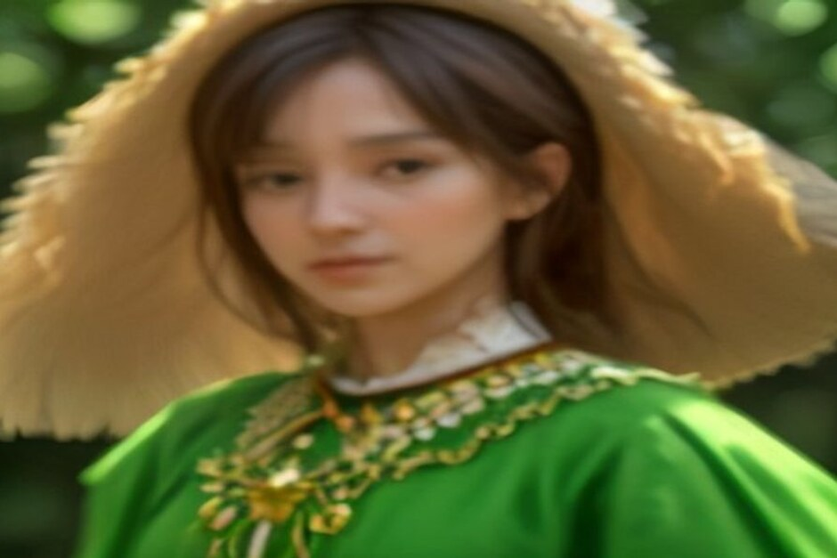
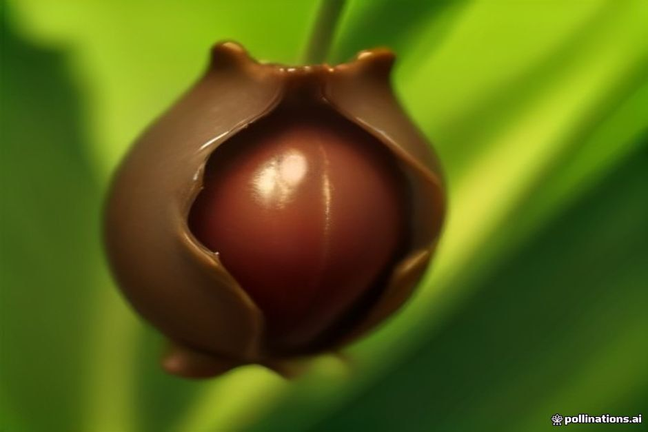

Cada año, a finales de octubre, el pueblo-cráter de Curral das Freiras se llena del olor a castañas asadas y del sonido de un cortejo que serpentea por sus calles estrechas. Esto es cuándo se celebra la Festa da Castanha 2026, qué ocurre realmente y cómo llegar hasta allí desde Funchal.
¿Cuándo es la Festa da Castanha en 2026?
La Festa da Castanha se celebra del sábado 31 de octubre al domingo 1 de noviembre de 2026 en Curral das Freiras, en el municipio de Câmara de Lobos. Es la 38.ª edición del valle, programada cada año para coincidir justo con el final de la cosecha local de la castaña, cuando los árboles de las laderas circundantes acaban de soltar su fruto. Como ocurre con la mayoría de las fiestas de pueblo en Madeira, los horarios exactos de los puestos y la hora de inicio del cortejo suelen confirmarse solo unas semanas antes, así que conviene consultar la agenda municipal de Câmara de Lobos o el calendario cultural de Madeira más cerca de la fecha.

¿Qué ocurre realmente en la fiesta?
El centro de la fiesta es el Cortejo Alegórico, un desfile alegórico con más de 350 participantes disfrazados y carrozas decoradas que recorren el pueblo celebrando la cosecha. A su alrededor, las calles y el recinto principal se llenan de decenas de puestos gestionados por productores locales de castaña y nuez, que venden su cosecha junto con platos elaborados con ella, además de actuaciones de folclore y música en directo durante todo el fin de semana. Es una fiesta de pueblo y no un espectáculo pensado para turistas — el público es en su mayoría madeirense, que sube desde la costa expresamente para este fin de semana, lo que forma parte de lo que la hace merecer la pena una vez.
¿Qué se puede comer y beber allí?
Las castañas asadas, vendidas calientes recién salidas de la sartén, son el punto de partida obvio, pero los puestos van mucho más allá: licor de castaña (un licor dulce de castaña), bolo de castaña (un bizcocho denso de castaña), sopa de castaña, miel, nueces y otros productos del valle aparecen a lo largo de todo el fin de semana. La poncha también está presente, como en casi todas las reuniones al aire libre de la isla. Los precios los fija cada puesto por su cuenta, no de forma centralizada, y todo se cocina y se vende en pequeñas cantidades, así que la comida está más fresca cuanto más temprano se llega.

¿Es gratuita la entrada a la fiesta?
Sí — la entrada al recinto de la fiesta es gratuita, y solo se paga lo que se compra una vez dentro: comida, bebidas y aparcamiento, cuando corresponde. Es algo típico de las fiestas de pueblo de Madeira, financiadas y organizadas por el ayuntamiento y la comunidad local en lugar de funcionar como un evento comercial con entrada de pago.
¿Dónde está Curral das Freiras y cómo se llega hasta allí?
Curral das Freiras se encuentra en el interior, en un valle volcánico en forma de cráter rodeado por algunos de los picos más altos de Madeira, a unos 20-25 minutos en coche desde Funchal por la ER107, que atraviesa un túnel de montaña para llegar al pueblo. No existe ninguna ruta costera ni en barco hasta allí — es la única parte de la isla a la que realmente hace falta llegar en coche (o en taxi o minibús turístico). La mayoría de los visitantes combina el trayecto con una parada en el mirador de Eira do Serrado, justo antes del túnel, que ofrece la clásica vista aérea sobre el valle antes de descender a él.
¿Merece la pena combinarlo con un paseo en barco ese día?
Puede funcionar bien como un día en dos partes, ya que la costa y el valle-cráter son un contraste tan marcado. Una Excursión de un día matinal por la costa sur — Câmara de Lobos, Cabo Girão, un baño en Fajã dos Padres — termina a primera hora de la tarde, dejando suficiente luz de día para subir hasta Curral das Freiras y llegar a tiempo para la fiesta antes del anochecer. Solo hay que contar con tiempo extra para el trayecto: es una carretera completamente distinta a la que sale de la marina, y el tráfico hacia el valle se va intensificando a medida que avanza el día durante el fin de semana de la fiesta.
La costa te da el mar. La Festa da Castanha te da el único fin de semana del año en que Curral das Freiras deja de estar tranquilo.
Es una fiesta pequeña y local, no un evento de postín, y ese es precisamente su atractivo — castañas asadas, un cortejo del que nadie fuera de Madeira ha oído hablar, y un valle que pasa el resto del año en silencio.